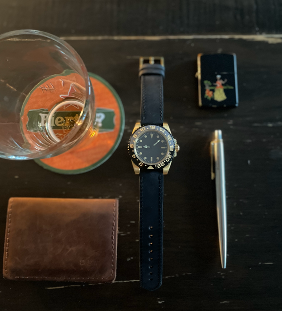
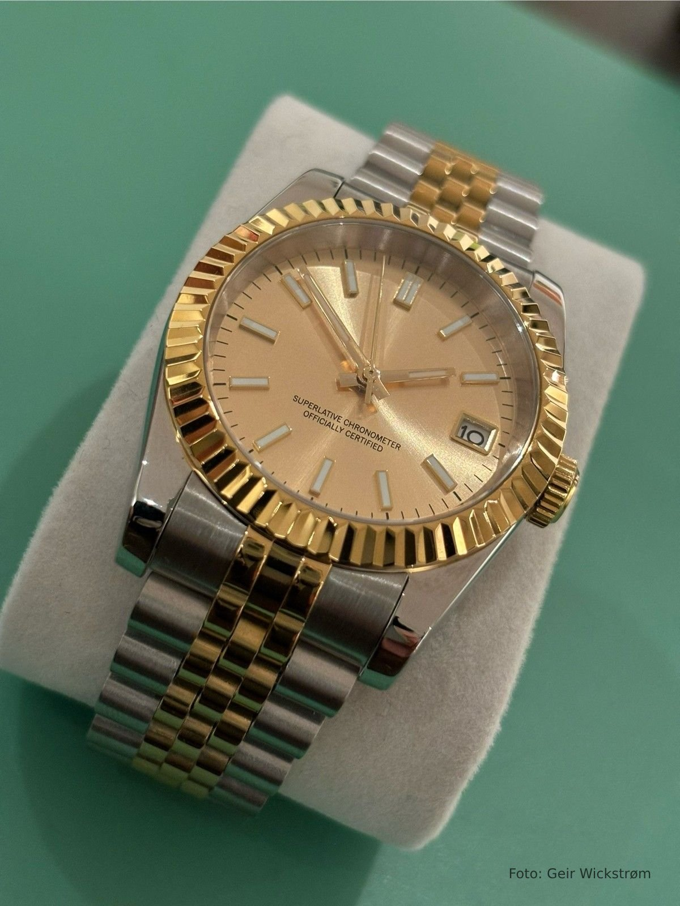

Om Wicksur
Velkommen til Wicksur! Her kan du utforske en rekke klokker, fra vintage arbåndsur jeg har overhallet, til klokkemods som er til salgs. Vi håper du finner inspirasjon og glede i min samling.
Mods til salgs

{kind=link}
Elegant klokke inspirert av Guinness øl med en håndlaget sort lærreim.

GMT Root Beer med en mørk versjon av Wave off Kanagawa-urskive.

Stilig klokke som er trykkbestandig til 10 bar / 100 meter under vann.
Jeg har bygget denne med tredjepartsdeler, rundt et originalt NH35a urverk fra Seiko.
Ubrukt og fersk!
Denne er inspirert av DJ two tone med gullfarget urskive, fluted bezel ring og krone.
Her har du en klokke som varer lenger enn oss mennesker når den mottar vedlikehold et par ganger i tiåret.
God kvalitet og veldig vakker finish på alle overflater.
Urverket er Seiko NH35a og kommer med følgende funksjoner: Timer, minutter, sekunder, dato, hacking (klokken stopper mens du stiller den), manuelt håndopptrekk, og automatisk opptrekk mens du har den på håndleddet.
Denne klokken kan brukes både til formelle anledninger og hverdag. Kanskje den perfekte gaven? Bestill med fiks ferdig eller kom innom og hent den. Jeg slår gjerne av en prat om klokker også!
Spesifikasjoner:
- 36mm u/ krone
- 20mm lenke basert på jubilee
- Safirglass
- Innebygd hurtigjustering i spennen på lenken (Glidelock)
- Klokken kommer i en stilig boks
Vintage

Longines Flagship med sentrert sekundviser. Denne tikker av gårde med et 30LS urverk.
Diverse

KUOE Royal Smith 90-008.